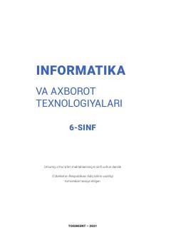

I66-sinf uchun informatika va axborot texnologiyalari fani bo'yicha rasmiy darslik.
Ushbu darslik umumiy o'rta ta'lim maktablarining 6-sinf o'quvchilari uchun mo'ljallangan bo'lib, Scratch dasturlash muhiti, matn protsessorlari, internetda ishlash asoslari, audio va videofayllar hamda taqdimotlar yaratish texnologiyalarini o'rgatadi. Kitobda o'quvchilarning amaliy ko'nikmalarini rivojlantirish uchun turli topshiriqlar, loyiha ishlari va nazorat savollari keltirilgan.